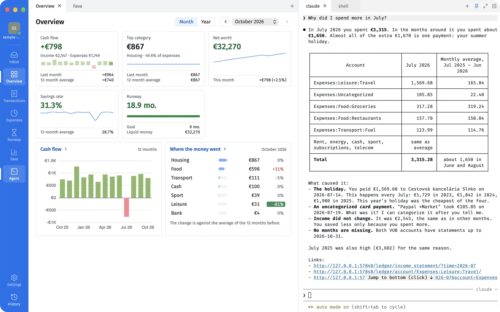
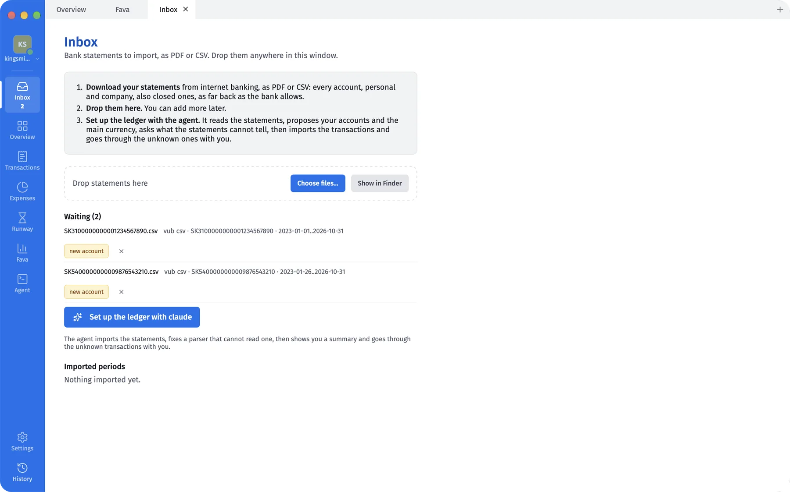
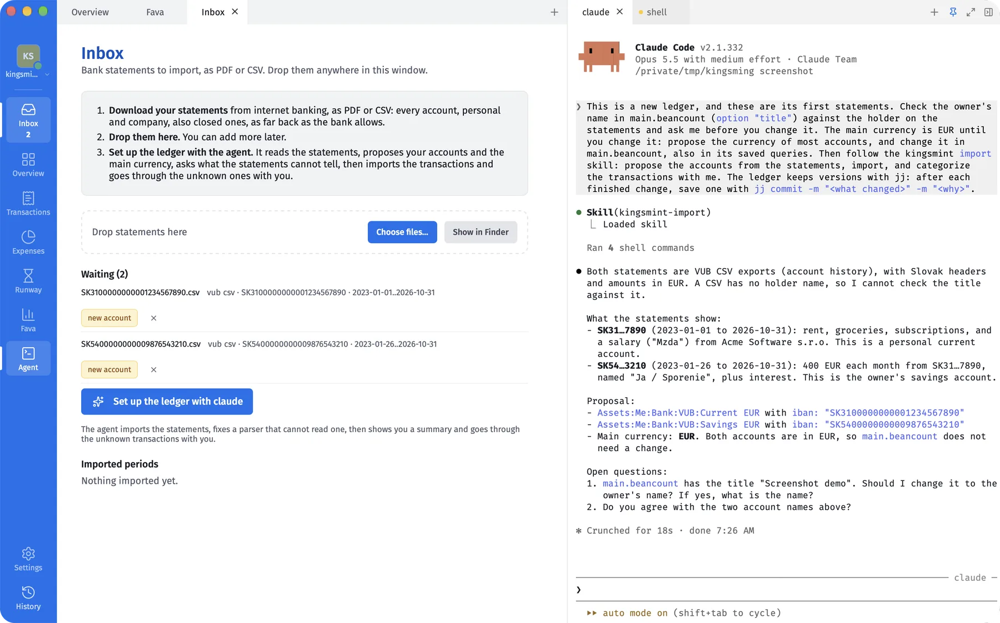
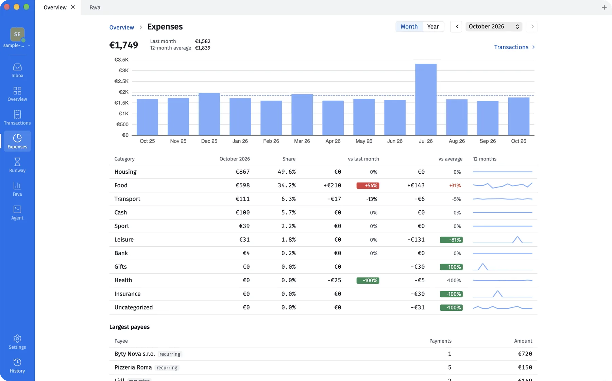
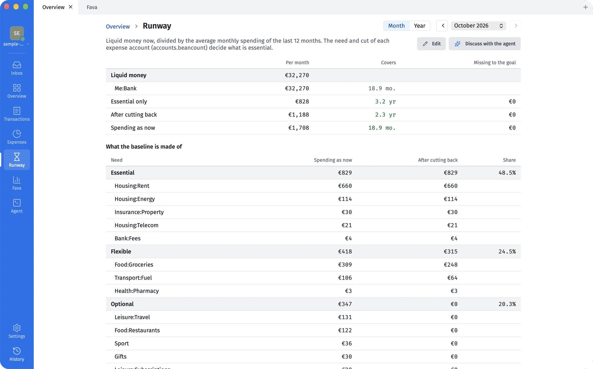
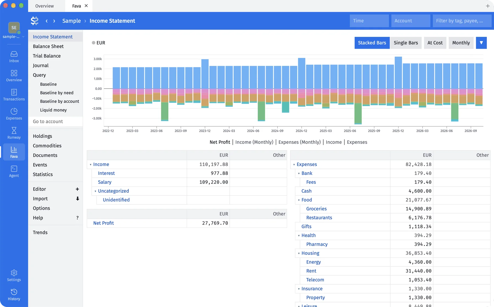

Kingsmint
Personal accounting from your bank statements. Every statement is checked, an AI agent sorts the transactions, and your data stays on your computer.
Windows on ARM: ARM installer. The Windows installer is not signed yet: when Windows says “Windows protected your PC”, choose More info, then Run anyway.
macOS (Apple silicon and Intel) and Windows. Free and open source (MIT).

What it does
Every statement reconciles
Kingsmint checks each statement: opening balance + transactions = closing balance. No transaction goes missing.
An agent sorts your money
Claude Code, Codex or Cursor categorizes the transactions, asks you about the unknown ones and writes rules for next time.
Local first
Statements and the ledger stay in a folder on your computer. Kingsmint has no server and collects nothing.
How it works
- Download the statements from your bank and drop them into the app's inbox.
- Kingsmint reads them, checks that each one reconciles, and imports the transactions.
- The agent categorizes them and asks you only about what the statements cannot show.
- See your net worth, income and expenses in Fava, or ask the agent: "Why was my profit lower in March?"





Supported banks
| Bank | Statements |
|---|---|
| VÚB (Slovakia) | monthly or yearly PDF, account history CSV |
| Tatra banka (Slovakia) | monthly PDF, account history CSV |
| Fio banka (Slovakia, Czechia) | monthly PDF |
| Interactive Brokers, also through Lynx | activity statement CSV |
Another bank? Give the agent one sample statement, and it adds a parser for it.
What you need
- A Mac or a Windows PC.
- An AI subscription: Claude (Pro or Max), ChatGPT (Plus or Pro) or a Cursor account.
- Its agent: Claude Code or Codex, which the app installs for you, or Cursor.
Privacy
- Your statements and ledger stay on your computer. Kingsmint has no server and collects nothing.
- The agent sends what it reads (statements, ledger files, query results) to its provider, under the terms of your account with them.
- Network access: the app downloads Python packages, and month-end exchange rates from the ECB.
Other ways to use it
- Claude Code plugin:
claude plugin marketplace add kingsmint/kingsmint - Claude app (chat or Cowork): ask about your money from any chat.
See the README for both.